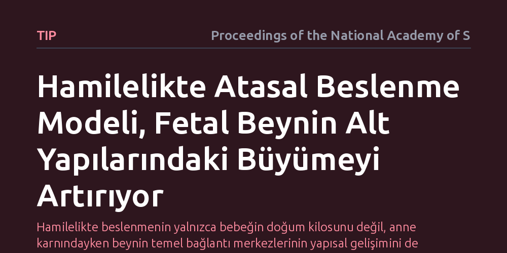

TIP · Proceedings of the National Academy of Sciences · 2026-09-12
Ekvador'da yürütülen Mikhuna klinik deneyi, hamilelikte uygulanan atasal beslenme modelinin fetüsün beyin gelişimine etkisini inceledi. Araştırma, avcı-toplayıcı beslenme örüntüsüne dayalı bu diyetin fetal beynin subkortikal (kabuk altı) bölgelerindeki büyümeyi belirgin şekilde artırdığını ortaya koydu.
Hamilelikte beslenmenin yalnızca bebeğin doğum kilosunu değil, anne karnındayken beynin temel bağlantı merkezlerinin yapısal gelişimini de doğrudan şekillendirebileceğini gösteriyor.

İnsan beyni, yüz binlerce yıllık evrimsel süreç boyunca avcı-toplayıcı atalarımızın erişebildiği besin çeşitliliğiyle şekillendi. Ancak son birkaç yüzyılda yaygınlaşan rafine şekerler, aşırı işlenmiş gıdalar ve endüstriyel yağlar, beslenme düzenimizi biyolojik köklerimizden belirgin biçimde kopardı. Bu beslenme değişimi yalnızca yetişkinlerde kronik metabolik sorunları tetiklemekle kalmıyor; insan gelişiminin en kritik penceresi olan hamilelik döneminde anne karnındaki bebeğin beyin inşasını da etkiliyor olabilir.
Bilim dünyasında uzun süredir tartışılan temel soru, hamilelikte atalarımızınkine benzer doğal ve besin yoğunluğu yüksek bir diyet uygulamanın, gelişmekte olan fetal beynin temel yapı taşlarını nasıl etkilediğidir. Mevcut gebelik önerileri genellikle yalnızca kalori miktarına ve standart vitamin takviyelerine odaklanırken, evrimsel biyolojiye dayalı bütüncül bir beslenme düzeninin anne karnındaki nörogelişime olan etkileri bugüne dek doğrudan sınanmamıştı.
Araştırmacılar bu soruyu yanıtlamak amacıyla Ekvador'da Kichwa dilinde 'beslemek' anlamına gelen Mikhuna adını verdikleri bir klinik deney yürüttü. Çalışmada hamile kadınlar izlenerek, geleneksel ve evrimsel beslenme prensiplerini modelleyen bir diyet protokolü uygulandı. Bu protokol; işlenmiş endüstriyel ürünlerin sınırlandığı, yüksek kaliteli doğal proteinlerin, temel çoklu doymamış yağ asitlerinin ve yerel doğal gıdaların öne çıkarıldığı bir örüntüden oluşuyordu.
Çalışmanın en önemli yönü, beslenmenin etkilerini doğum sonrasını beklemeden, doğrudan anne karnında takip etmesiydi. İleri düzey ultrason teknikleri kullanılarak gebelik boyunca fetüsün kraniyal ölçümleri yapıldı. Araştırmacılar özellikle beynin kabuk altı (subkortikal) çekirdeklerinin ve beyincik gibi kritik merkezlerin büyüme hızını düzenli aralıklarla kayıt altına aldı.
Elde edilen ultrason verileri, atasal beslenme modeline tabi tutulan annelerin bebeklerinde alt beyin bölgelerinin büyüme hızının standart beslenme izleyen kontrol grubuna kıyasla daha yüksek olduğunu ortaya koydu. Özellikle beyincik (serebellum) genişliği ve iki beyin yarım küresini birbirine bağlayan korpus kallozum gibi derin yapılar, bu beslenme müdahalesine belirgin bir gelişimsel yanıt verdi.
Dikkat çekici olan nokta, bu büyüme farkının bebeğin genel vücut ağırlığındaki orantısız bir irileşmeden kaynaklanmamasıydı. Yani diyet, fetüsü bütünüyle aşırı büyütmek yerine, doğrudan sinir dokularının ve özellikle duyusal-motor koordinasyonu yöneten ilkel beyin merkezlerinin olgunlaşmasını desteklemiş görünüyordu.
Bu sonuçlar, hamilelikte anne beslenmesinin yalnızca bebeğin doğum kilosunu güvenceye almakla kalmayıp, beynin derin bağlantı merkezlerinin anatomik mimarisini doğrudan etkileyebileceğini gösteriyor. Evrimsel uyum penceresinden bakıldığında bulgular, modern rafine gıdaların fetüsün beyin potansiyelini kısıtlayabileceği, doğal ve zengin besin örüntülerinin ise bu potansiyeli açığa çıkarabileceği fikrini destekliyor.
Yine de sonuçları değerlendirirken temkinli olmak gerekir. Anne karnında ölçülen yapısal büyümenin, çocuğun ileriki yaşlarındaki zihinsel çevikliğe veya davranışsal gelişimine nasıl yansıyacağı henüz bilinmiyor. Dahası, bu çalışma belirli bir coğrafi ve sosyoekonomik toplulukta gerçekleştirildiğinden, bulguların evrensel bir klinik kılavuza dönüşebilmesi için farklı toplumlarda bağımsız deneylerle doğrulanması gerekiyor.